에너지·산업재 브랜드 169
전력·가스·석유 같은 에너지 기업과 항공우주·기계·화학·소재처럼 산업의 기반을 만드는 브랜드를 모았습니다. 브랜드 아틀라스에 수록된 에너지·산업재 브랜드 169개를 로고와 함께 모았습니다. 각 항목은 설립 배경, 브랜드 아이덴티티, 로고 변천, 제품과 서비스, 현재 상태를 정리한 상세 페이지로 이어집니다.
다른 산업 보기
기원 국가가 확인된 브랜드는 163개이며 미국 131개, 한국 7개, 아일랜드 4개, 일본 3개, 프랑스 3개 순으로 많습니다. 설립연도가 확인된 브랜드는 160개이며 가장 오래된 곳은 1802년, 가장 최근은 2023년에 시작했습니다. 시기별로는 1900년 이전 26개, 1900~1949년 44개, 1950~1999년 63개, 2000년 이후 27개입니다. 수록 자료로는 로고 이미지 134개, 연혁 타임라인 10개를 갖췄습니다. 이 가운데 159개는 공식 웹사이트가 일치하는 위키데이터 개체로 연결해 두었습니다.
에너지·산업재 브랜드 목록
품질 점수 순 상위는 로고 타일로, 나머지는 가나다순 목록으로 보입니다.
 로열 더치 쉘Shell영국 · 1890년
로열 더치 쉘Shell영국 · 1890년셸은 영국·네덜란드에 뿌리를 둔 글로벌 에너지·석유 기업으로, 원유 탐사와 생산부터 정유, 가스, 화학, 주유소 소매 판매까지 에너지 가치사슬…
 런던전기위원회London Electricity Board1948년
런던전기위원회London Electricity Board1948년런던전기위원회(London Electricity Board, LEB)는 1947년 전기법(Electricity Act 1947)에 따른 영국…
 일본에너지Japan Energy Corporation1966년
일본에너지Japan Energy Corporation1966년일본에너지(Japan Energy Corporation)는 닛폰광업(Nippon Mining) 계열의 일본 석유회사로, 그 주유소·석유제품은…
 코스모석유Cosmo Oil일본
코스모석유Cosmo Oil일본코스모석유는 일본의 정유·석유 정제 및 주유소 운영 기업으로, 현재 지주회사 코스모에너지홀딩스 산하의 핵심 사업회사다.
 도쿄전력TEPCO일본 · 1951년
도쿄전력TEPCO일본 · 1951년도쿄전력(TEPCO, Tokyo Electric Power Company)은 1951년 5월 1일 설립된 일본 최대 전력회사로, 그 뿌리는…
 아지프AGIP
아지프AGIP아지프(Agip)는 1926년 이탈리아에서 국영으로 출범한 석유 브랜드로, 정식 명칭은 '아첸다 제네랄레 이탈리아나 페트롤리(Azienda…
 에쓰오일S-Oil한국 · 1976년
에쓰오일S-Oil한국 · 1976년에쓰오일(S-Oil)은 사우디 아람코가 최대주주인 한국의 정유 기업으로, 1976년 설립돼 2000년 현 사명이 됐다.
코노코필립스ConocoPhillips미국 · 1875년코노코필립스(ConocoPhillips)는 미국의 다국적 탄화수소 탐사·생산 기업이다.
 버티브Vertiv미국 · 1965년
버티브Vertiv미국 · 1965년버티브(Vertiv)는 데이터 센터, 통신 네트워크, 상업·산업 환경에 전력 관리와 열 관리, 통합 랙, 모니터링 및 관련 서비스를 제공하는…
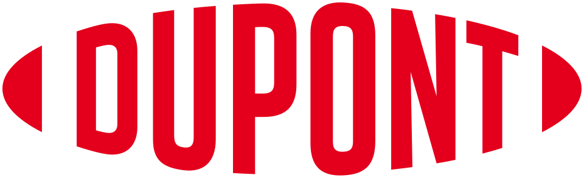
듀폰DuPont미국 · 1802년듀폰(DuPont)은 미국 델라웨어주 윌밍턴에 본사를 두고 헬스케어, 물, 건설, 산업 시장을 위한 제품을 생산하는 기업이다.
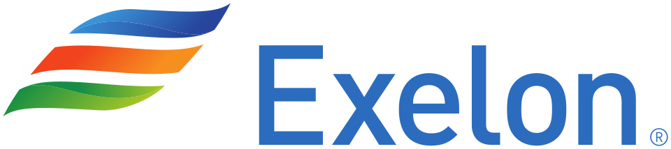
엑셀론Exelon미국 · 2000년엑셀론(Exelon)은 시카고에 본사를 두고 펜실베이니아에 법인 등록된 미국 공공 유틸리티 회사이다.
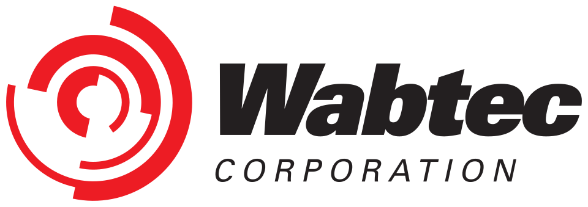
웹텍Wabtec미국 · 1999년웹텍(Wabtec)은 기관차, 화차, 여객 운송 차량용 제품을 제조하고 신규 기관차를 제작하는 미국의 철도 기술·장비 기업이다.
프리포트 맥모란Freeport-McMoRan미국 · 1912년프리포트 맥모란(Freeport-McMoRan)은 미국 피닉스에 본사를 둔 광업 회사이다.
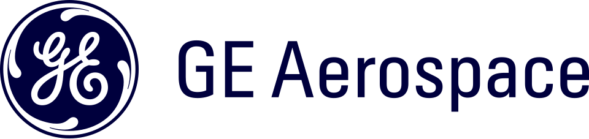
GE 에어로스페이스GE Aerospace미국 · 1892년GE 에어로스페이스(GE Aerospace)는 오하이오주 신시내티 외곽의 Evendale에 본사를 둔 미국 항공기 엔진 공급업체이다.
 로크웰 오토메이션Rockwell Automation미국 · 2001년
로크웰 오토메이션Rockwell Automation미국 · 2001년로크웰 오토메이션(Rockwell Automation)은 미국에 기반을 둔 산업 자동화 및 디지털 트랜스포메이션 기술 제공업체이다.
 파카 그룹PACCAR미국 · 1905년
파카 그룹PACCAR미국 · 1905년파카 그룹(PACCAR)은 대형 트럭 제조를 중심으로 부품, 금융, 임대, 정보기술 사업을 함께 운영하는 미국의 기업 집단이다.
누코Nucor미국 · 1955년누코(Nucor)는 샬럿에 본사를 둔 미국의 철강 및 관련 제품 생산 기업이다.
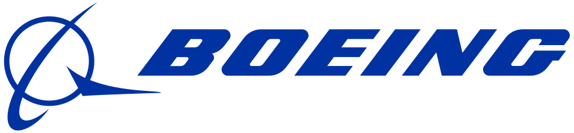
보잉Boeing미국 · 1916년보잉(Boeing)은 항공기, 회전익기, 로켓, 위성, 미사일을 설계하고 제조하는 미국의 다국적 기업이다.
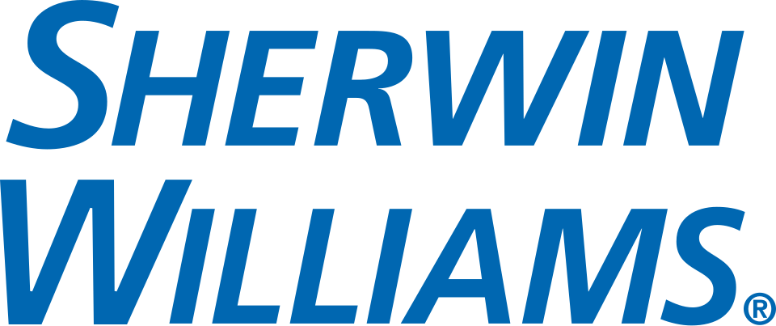
셔윈윌리암스Sherwin-Williams미국 · 1866년셔윈윌리암스(Sherwin-Williams)는 미국 클리블랜드에 본사를 둔 도료·코팅 기업이다.
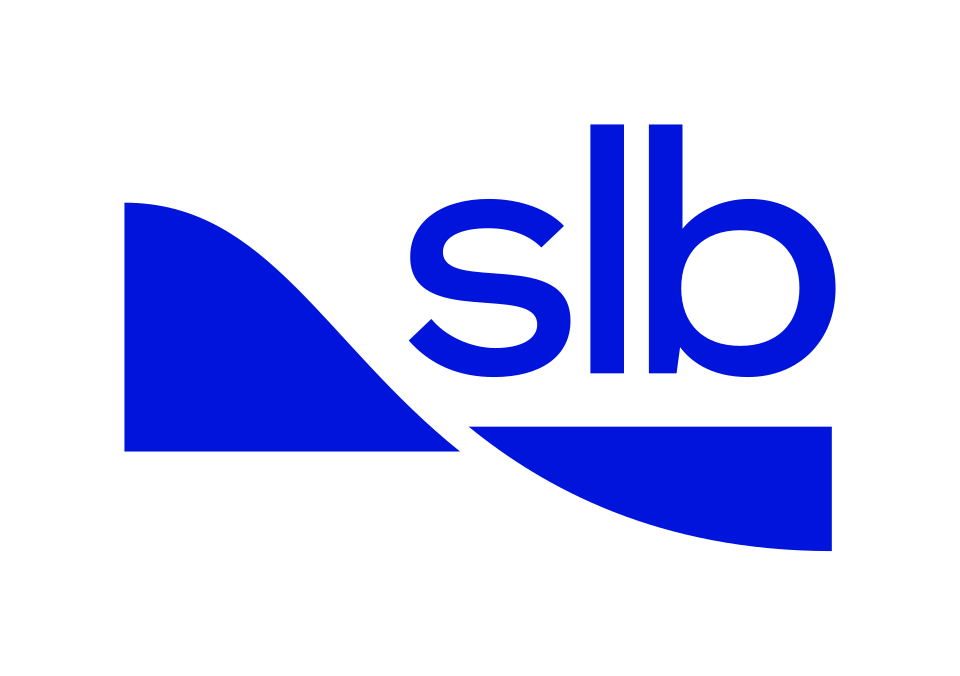
슐룸베르거SLB미국 · 1926년슐룸베르거(SLB)는 석유 산업에 시추와 유전 평가, 데이터 처리, 소프트웨어 등을 제공하고 지하수 추출과 탄소 포집·저장에도 참여하는 다국적…
제너럴 다이내믹스General Dynamics미국 · 1952년제너럴 다이내믹스(General Dynamics)는 미국의 산업·기술 기업으로, 군사 장비와 Gulfstream 비즈니스 제트기를 생산하고…
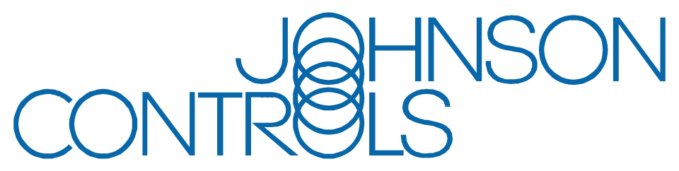
존슨 컨트롤스Johnson Controls아일랜드 · 1885년존슨 컨트롤스(Johnson Controls)는 건물용 화재 방지, HVAC, 보안 장비를 생산하는 미국·아일랜드계 다국적 복합기업이다.
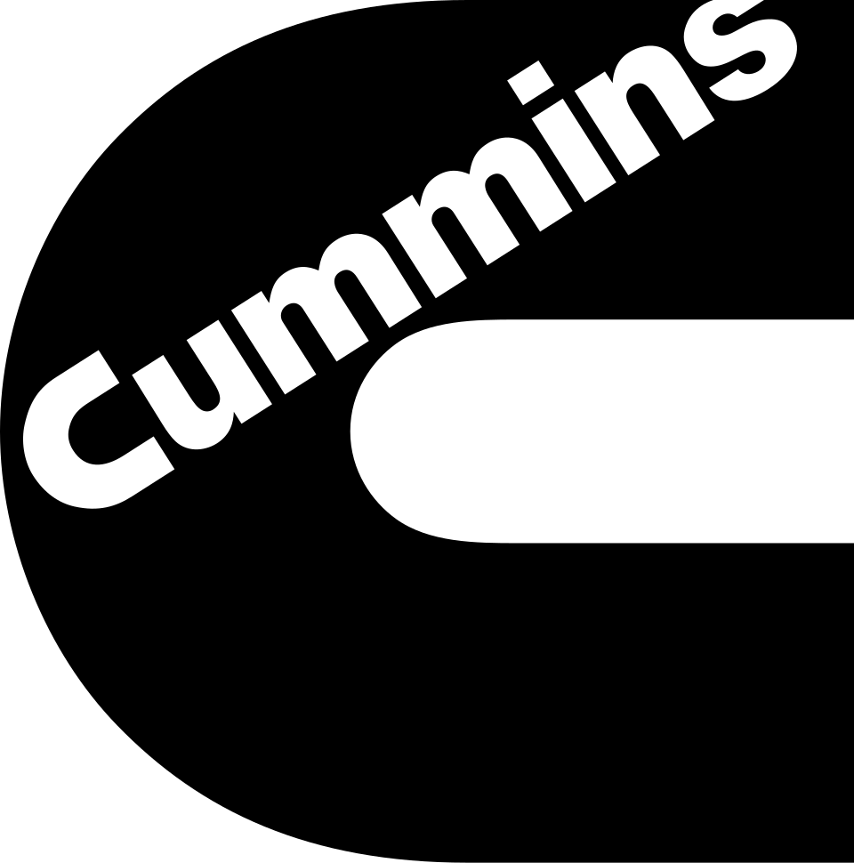
커민스Cummins미국 · 1919년커민스(Cummins)는 디젤 엔진, 전기차 부품, 발전 제품을 설계·제조·유통하고 엔진과 관련 장비의 서비스를 제공하는 미국의 다국적…
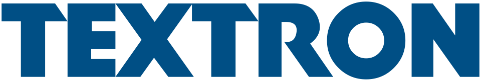
텍스트론Textron미국 · 1923년텍스트론(Textron)은 미국 프로비던스에 본사를 둔 산업 복합기업이다.
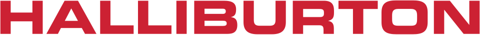
할리버튼Halliburton미국 · 1919년할리버튼(Halliburton)은 미국에 법인을 둔 다국적 유전 서비스 기업이다.
 엑슨모빌ExxonMobil미국 · 1882년
엑슨모빌ExxonMobil미국 · 1882년엑슨모빌(ExxonMobil)은 미국의 석유 회사로, 엑슨과 모빌의 합병으로 형성된 기업이다.
 뉴몬트Newmont Mining Corporation미국 · 1916년
뉴몬트Newmont Mining Corporation미국 · 1916년뉴몬트(Newmont Mining Corporation)는 미국에 기반을 두고 여러 국가에서 금광을 소유·운영하는 광업 회사이다.
 오티스 엘리베이터Otis Worldwide Corporation미국 · 1853년
오티스 엘리베이터Otis Worldwide Corporation미국 · 1853년오티스 엘리베이터(Otis Worldwide Corporation)는 엘리베이터와 에스컬레이터를 비롯한 승강설비를 개발·제조하고 유지보수하는…
 이튼 코퍼레이션Eaton Corporation미국 · 1911년
이튼 코퍼레이션Eaton Corporation미국 · 1911년이튼 코퍼레이션(Eaton Corporation)은 전기, 항공우주, 차량 및 e-모빌리티 분야의 시스템과 부품을 제조·판매하는 다국적 전력…
 인터내셔널페이퍼International Paper미국 · 1898년
인터내셔널페이퍼International Paper미국 · 1898년인터내셔널페이퍼(International Paper)는 미국에 본사를 두고 종이, 골판지 포장, 펄프 등을 생산하는 제지회사이며, 근거에서…
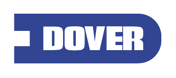
도버Dover Corporation미국 · 1955년도버(Dover Corporation)는 미국 다우너스그로브에 본사를 둔 산업 제품 제조 복합기업이다.
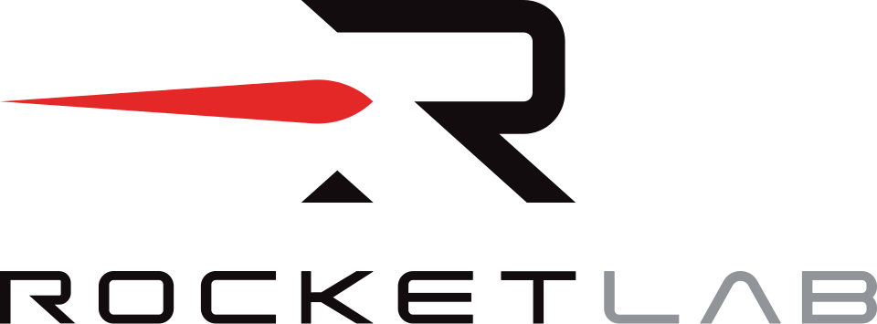
로켓 랩Rocket Lab뉴질랜드 · 2006년로켓 랩(Rocket Lab)은 소형 위성 발사와 우주선 제조를 수행하는 상장 항공우주 제조사이자 발사 서비스 제공업체이다.
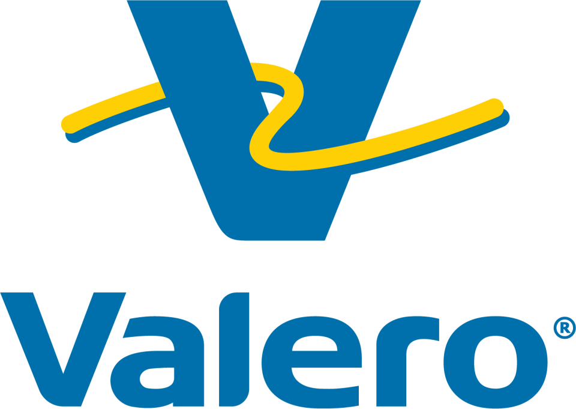
발레로 에너지Valero Energy미국 · 1980년발레로 에너지(Valero Energy)는 운송용 연료와 관련 제품의 제조 및 마케팅을 주력으로 하는 미국 연료 생산 기업이다.
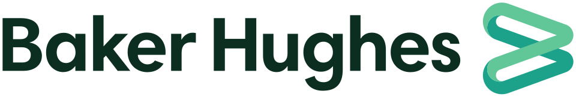
베이커 휴즈Baker Hughes미국 · 1908년베이커 휴즈(Baker Hughes)는 석유·가스 탐사와 생산을 비롯해 에너지 및 산업 분야에 장비, 기술, 서비스를 제공하는 미국의 글로벌…
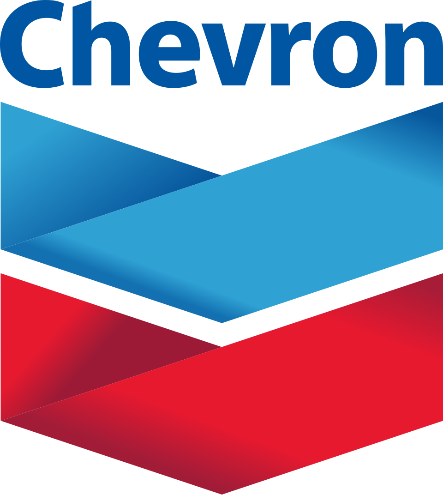
셰브런Chevron Corporation미국셰브런(Chevron Corporation)은 석유와 가스를 중심으로 탐사, 생산, 정제, 운송, 판매와 발전 사업을 전개하는 미국의 다국적…
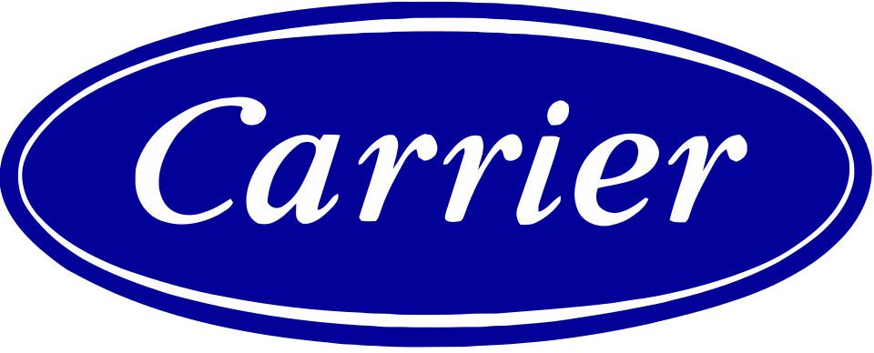
캐리어Carrier Corporation미국 · 1915년캐리어(Carrier Corporation)는 미국의 다국적 냉난방·환기·공조, 냉동, 화재·보안 장비 기업이다.
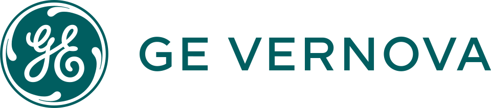
GE버노바GE Vernova미국 · 2023년GE버노바(GE Vernova)는 미국 케임브리지에 본사를 두고 발전·풍력·전력망·전력 관리 기술의 장비 제조와 서비스를 수행하는 에너지…
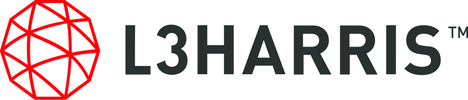
L3해리스L3Harris Technologies미국 · 2019년L3해리스(L3Harris Technologies)는 지휘통제, 통신, 항공전자, 감시·정찰 체계와 관련 서비스를 공급하는 미국 기술·방위산업…
 엔지Engie프랑스 · 2008년
엔지Engie프랑스 · 2008년엔지(Engie)는 전력과 천연가스를 생산·판매하는 프랑스의 다국적 에너지 회사이다.
 가스프롬Gazprom러시아 · 1989년
가스프롬Gazprom러시아 · 1989년가스프롬(Gazprom)은 1989년에 설립된 러시아 상트페테르부르크에 본사를 둔 반국영 다국적 에너지 기업이다.
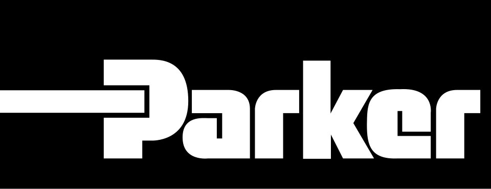
파커 하니핀Parker Hannifin미국 · 1917년파커 하니핀(Parker Hannifin)은 미국 클리블랜드에 본사를 두고 모션 및 제어 기술을 중심으로 항공우주·유압·공압 등 여러 산업…
 스탠리 블랙앤데커Stanley Black & Decker미국 · 1843년
스탠리 블랙앤데커Stanley Black & Decker미국 · 1843년스탠리 블랙앤데커(Stanley Black & Decker)는 미국의 산업용 도구 및 가정용 하드웨어 제조업체이자 보안 제품 제공업체이다.
 옥시덴탈 페트롤리움Occidental Petroleum미국 · 1920년
옥시덴탈 페트롤리움Occidental Petroleum미국 · 1920년옥시덴탈 페트롤리움(Occidental Petroleum)은 미국의 석유·가스 개발과 거래, 화학 관련 사업을 영위하는 기업이다.
 허니웰Honeywell미국 · 1885년
허니웰Honeywell미국 · 1885년허니웰(Honeywell)은 상용·소비자 제품과 엔지니어링 서비스, 항공우주 시스템을 개발하는 미국의 다국적 복합기업이다.
 PPG 인더스트리PPG Industries미국 · 1883년
PPG 인더스트리PPG Industries미국 · 1883년PPG 인더스트리(PPG Industries)는 미국 피츠버그에 본사를 두고 페인트, 코팅제와 특수 재료를 세계 시장에 공급하는 기업이다.
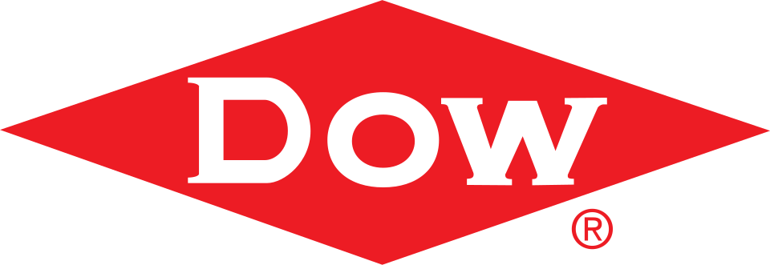
다우 케미컬Dow Chemical Company미국 · 1897년다우 케미컬(Dow Chemical Company)은 미국 미들랜드에 본사를 둔 다국적 화학 기업이다.
 디어 앤 컴퍼니Deere & Company미국 · 1868년
디어 앤 컴퍼니Deere & Company미국 · 1868년디어 앤 컴퍼니(Deere & Company)는 농업·산림·잔디 관리용 기계와 중장비, 디젤 엔진 및 구동계를 제조하고 금융 서비스를 제공하는…
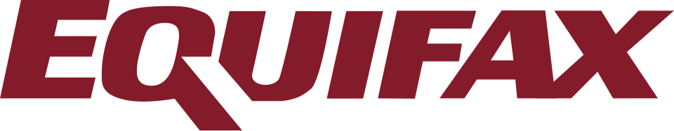
에퀴팩스Equifax미국 · 1899년에퀴팩스(Equifax)는 미국 애틀랜타에 본사를 둔 다국적 소비자 신용정보회사로, Experian·TransUnion과 함께 3대 소비자…
전체 목록
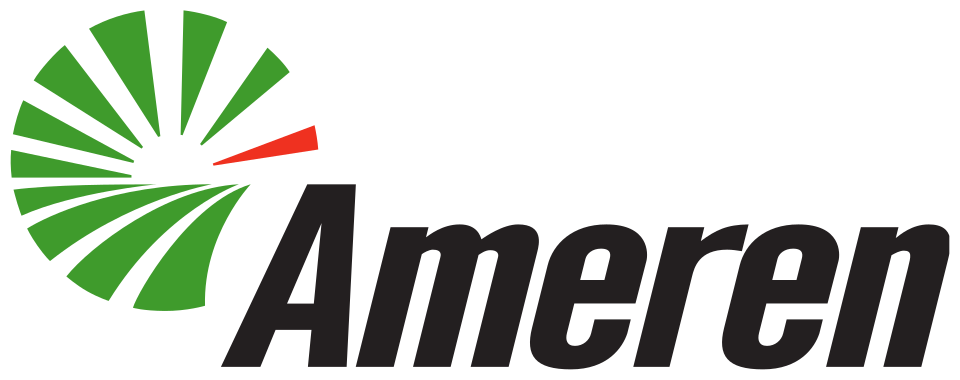
AmerenAmeren은 미국에서 전력과 천연가스를 공급하는 에너지 기업이다.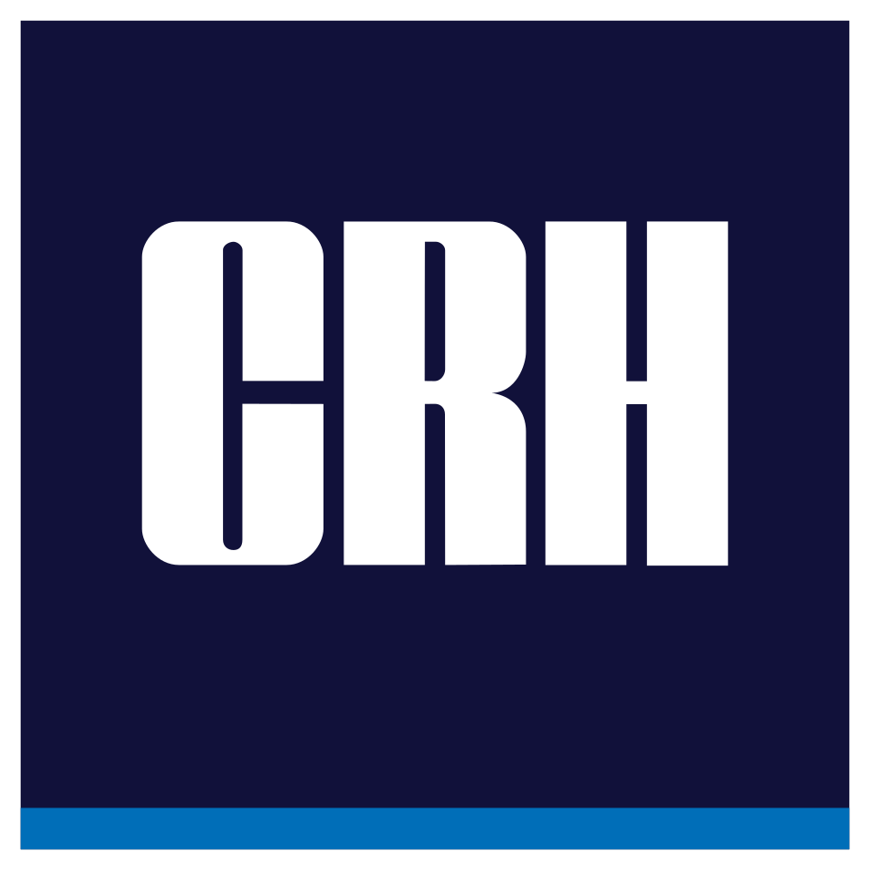
CRHCRH는 더블린과 미국 뉴욕에 본사를 둔 미국·아일랜드계 건축자재 공급업체이다.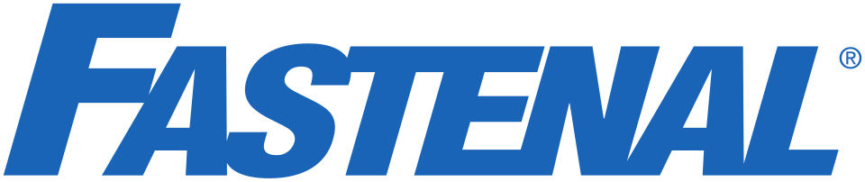
FastenalFastenal은 미국 위노나에 본사를 둔 상장 기업 브랜드이다.Ferguson EnterprisesFerguson Enterprises는 미국에서 배관, 냉난방·환기·공조, 가전, 조명, 밸브와 피팅, 상하수도 제품을 유통하는 기업이다.FerrovialFerrovial은 고속도로·공항·건설과 모빌리티·에너지 인프라를 아우르며 20개가 넘는 국가에서 교통 및 이동 인프라 사업을 운영하는 다국적 기업이다.FortiveFortive는 미국 에버렛에 본사를 둔 산업 기술 복합기업이다.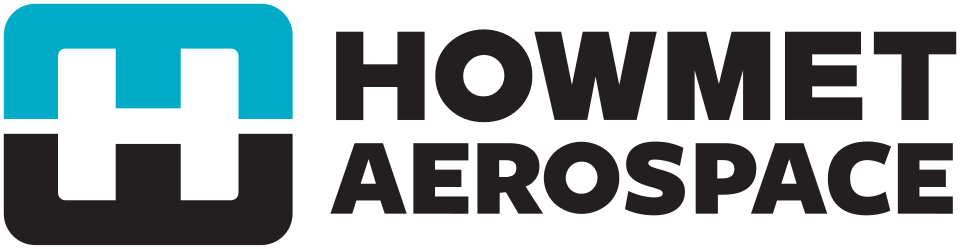
Howmet AerospaceHowmet Aerospace는 미국 피츠버그에 본사를 둔 항공우주 부품 제조 기업이다.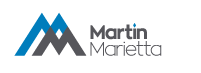
Martin Marietta MaterialsMartin Marietta Materials는 미국에서 골재와 중량 건축 자재를 공급하며 도로, 보도, 기초 공사에 필요한 자원을 제공하는 기업이다.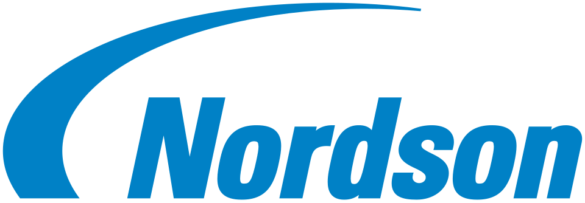
Nordson CorporationNordson Corporation은 접착제·밀봉재·코팅재용 정밀 도포 장비와 전자부품 검사 장비, 의료기기 관련 기술을 설계·제조하는 미국 다국적 기업이다.NRG EnergyNRG Energy는 휴스턴에 본사를 둔 미국 에너지 기업이다.ONEOKONEOK은 털사에 본사를 둔 미국의 석유·가스 중류 사업자로, 관련 산업에 집하·처리·분류·운송·저장 서비스를 제공한다.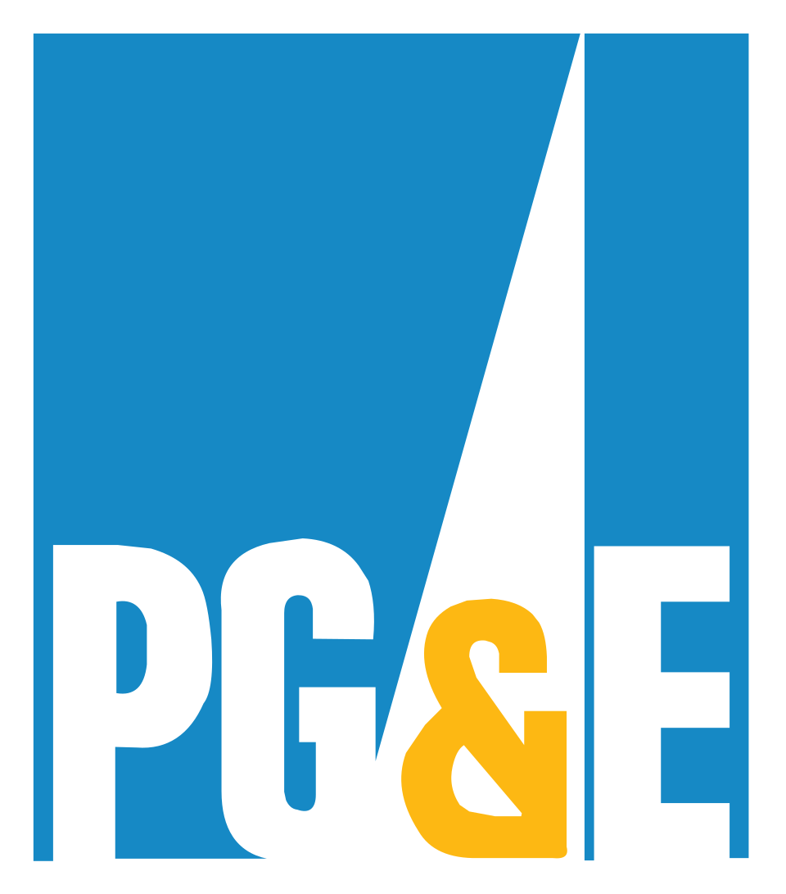
Pacific Gas and Electric CompanyPacific Gas and Electric Company는 미국의 투자자 소유 유틸리티로, 캘리포니아 북부 3분의 2 지역의 가구에 천연가스와 전기를 공급하는…Packaging Corporation of AmericaPackaging Corporation of America는 미국 레이크포리스트에 본사를 두고 컨테이너보드와 백지를 생산하며 포장 전환·설계·공급 시설을…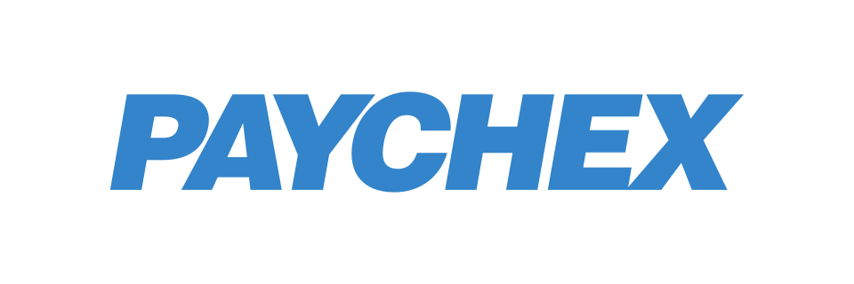
PaychexPaychex는 미국의 중소기업을 대상으로 인사 관리, 급여 처리, 직원 복리후생 관련 업무를 위탁받아 수행하는 기업이다.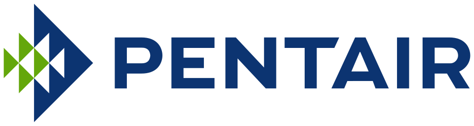
PentairPentair는 아일랜드에 법인을 두고 영국에 세무상 거주지를 둔 수처리 회사로, 주거·상업·산업·공공 분야에 관련 설비와 사업을 제공한다.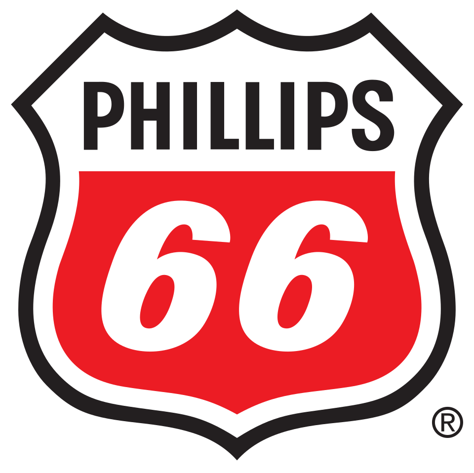
Phillips 66Phillips 66은 텍사스주 휴스턴의 Westchase에 본사를 둔 미국의 다국적 에너지 기업이다.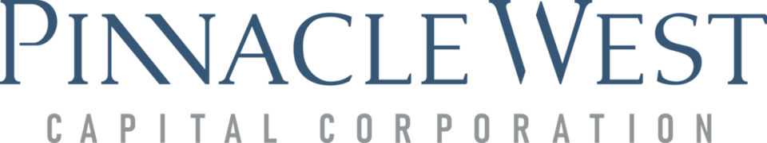
Pinnacle West Capital CorporationPinnacle West Capital Corporation은 미국 피닉스에 본사를 두고 Arizona Public Service를 소유한 공익사업 지주회사이다.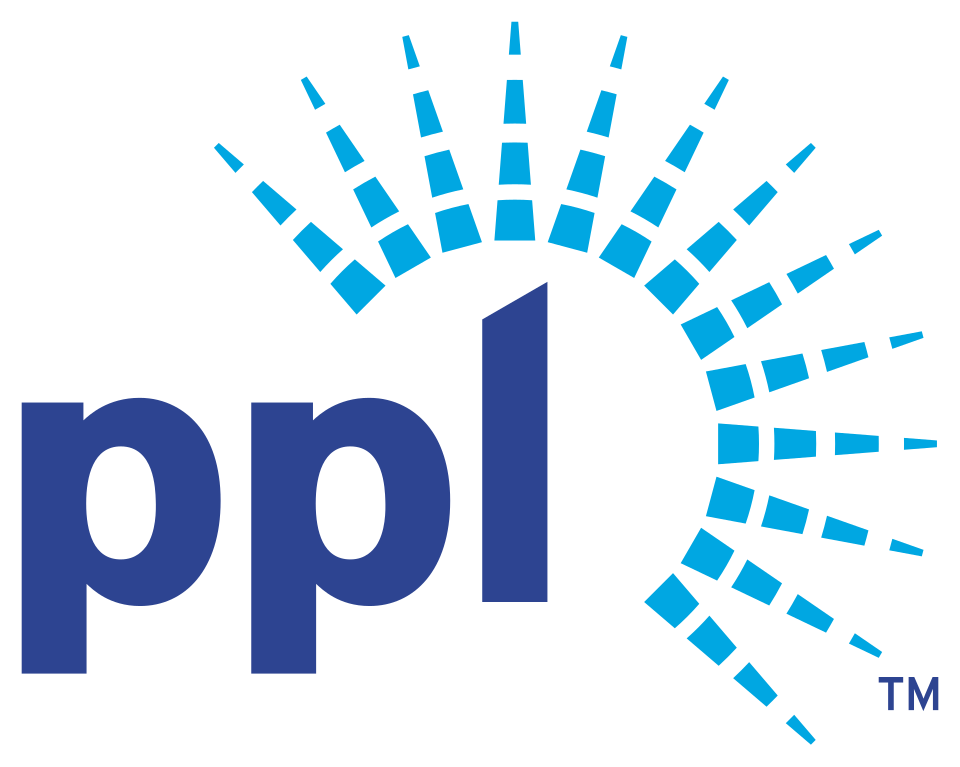
PPLPPL은 미국 앨런타운에 본사를 두고 전력 송배전과 규제 공익사업을 운영하는 에너지 회사이다.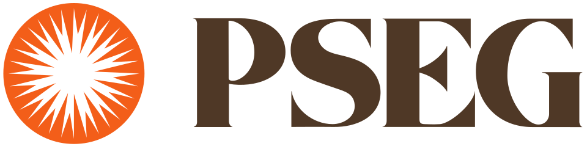
Public Service Enterprise GroupPublic Service Enterprise Group은 뉴어크에 본사를 둔 상장 에너지 회사이다.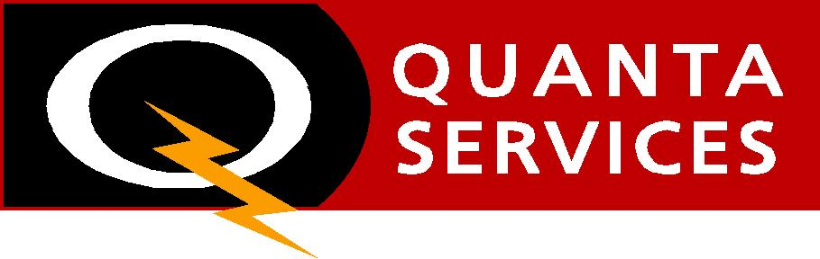
Quanta ServicesQuanta Services는 전력, 파이프라인, 산업 및 통신 분야의 인프라 서비스를 제공하는 미국 기업이다.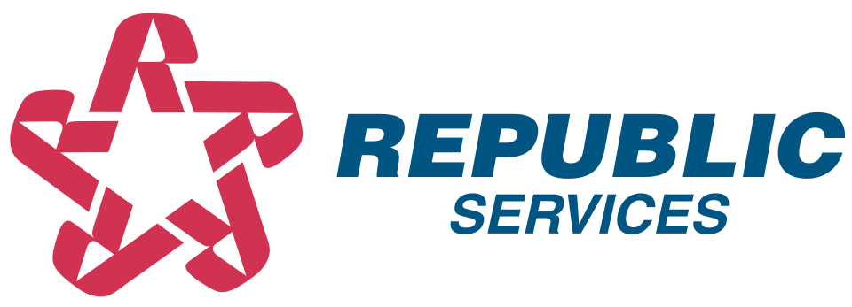
Republic ServicesRepublic Services는 북미에서 비유해성 고형폐기물의 수거·이송·처분과 재활용, 에너지 서비스를 제공하는 미국 폐기물 처리 기업이다.RTX 코퍼레이션 RTXRTX 코퍼레이션(RTX)은 미국의 다국적 항공우주 및 방위 복합기업으로, 항공우주 제조와 방위 사업 및 정보 서비스를 함께 수행한다.SempraSempra는 샌디에고에 본사를 두고 전력과 천연가스 인프라에 집중하는 북미 공공 유틸리티 지주회사이다.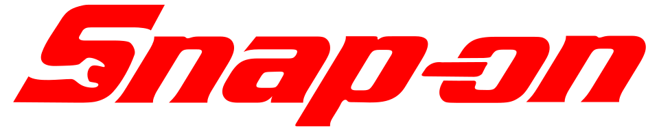
Snap-onSnap-on은 운송 산업의 전문가용 고급 공구와 장비를 설계·제조·판매하는 미국 기업이다.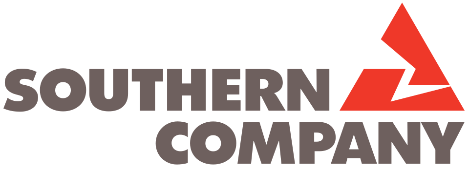
Southern CompanySouthern Company는 미국 남부를 기반으로 가스와 전력 공익사업 자회사를 보유·운영하며 애틀랜타에 본사를 둔 미국의 영리 공익사업 지주회사이다.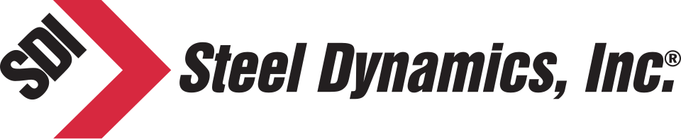
Steel DynamicsSteel Dynamics는 미국 포트웨인에 본사를 둔 철강 생산 기업으로, 13 million tons의 생산 능력을 보유한 미국 탄소강 제품 생산 규모…Targa ResourcesTarga Resources는 미국의 미드스트림 에너지 인프라 기업이다.Texas Pacific Land TrustTexas Pacific Land Trust는 미국 텍사스 서부의 대규모 토지를 기반으로 석유·가스 로열티와 관련 용수 사업을 운영한 상장 부동산 운영 기업의…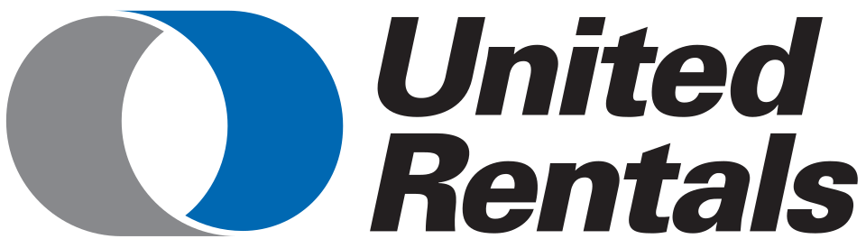
United RentalsUnited Rentals는 건설·산업 현장과 공공기관, 개인 고객에게 일반·고소 작업·특수 장비를 빌려주고 관련 판매와 정비를 제공하는 미국 장비 임대…Veralto CorporationVeralto Corporation은 미국 월섬에 본사를 둔 기술회사로, 물 분석·처리와 산업용 표시·코딩, 포장·색상 관련 제품을 생산한다.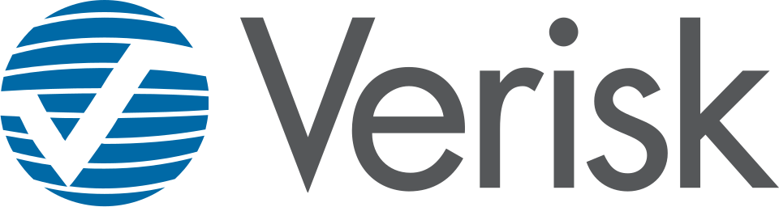
Verisk AnalyticsVerisk Analytics는 미국 저지시티에 본사를 둔 다국적 데이터 분석·위험 평가 기업으로, 보험과 정부 및 위험 관리 부문의 고객을 대상으로 한다.VistraVistra는 미국 어빙에 본사를 두고 전력 소매와 발전을 함께 운영하는 통합 에너지 기업이다.Vulcan Materials CompanyVulcan Materials Company는 미국 버밍햄에 본사를 두고 건설 자재를 생산·유통·판매하는 회사이다.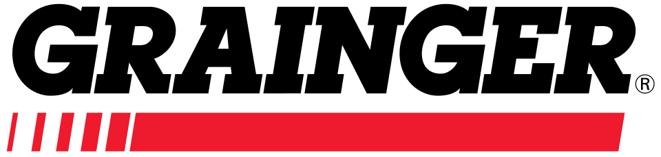
W. W. GraingerW. W. Grainger는 기업 고객에게 모터와 조명, 공구, 안전용품 등을 공급하는 미국의 산업용품 회사이다.Waste Management, IncWaste Management, Inc는 북미에서 폐기물 관리 사업을 운영하며 WM 또는 WV라는 상호를 사용하는 미국 기업이다.WEC Energy GroupWEC Energy Group은 미국 밀워키에 본사를 둔 에너지 기업이다.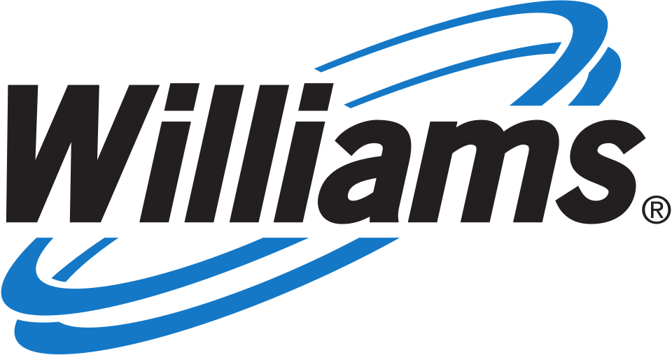
Williams CompaniesWilliams Companies는 미국 털사에 본사를 둔 에너지 회사로, 천연가스 처리와 운송을 핵심 사업으로 한다.Xcel EnergyXcel Energy는 미니애폴리스에 본사를 둔 미국의 규제 전력 공익사업자이자 천연가스 공급 회사이다.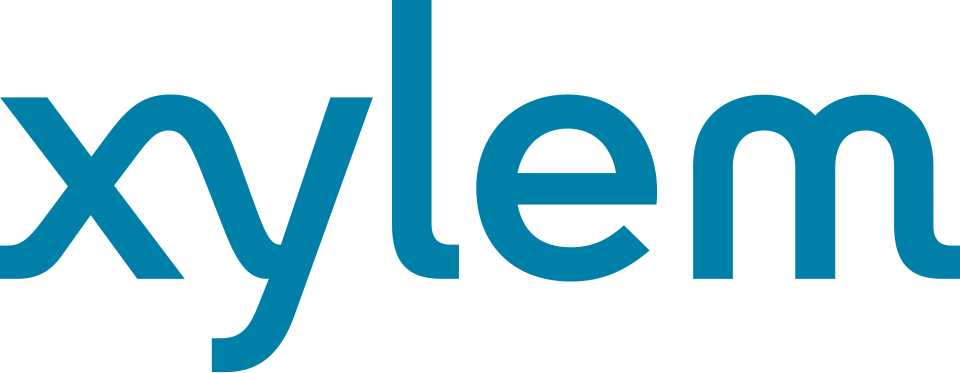
Xylem Inc.Xylem Inc.는 공공시설과 산업·상업·농업·주거 환경에 물 관련 기술을 공급하는 미국 기업이다.